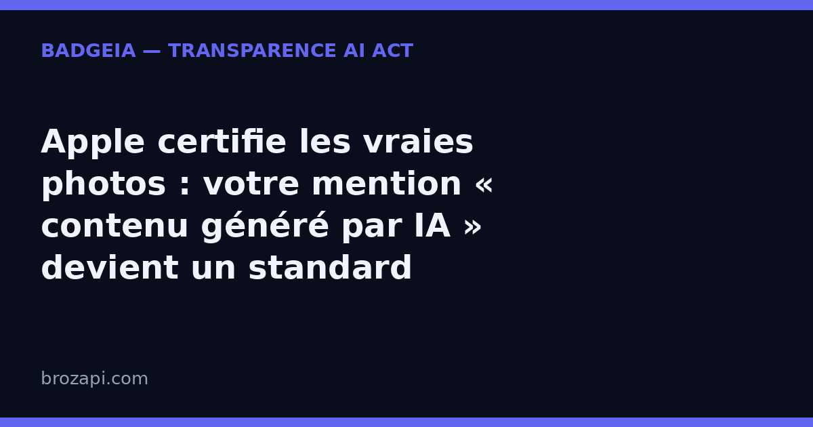

Apple certifie les vraies photos — pourquoi votre mention « contenu généré par IA » devient un standard

Publié le · Lecture : 7 minutes · Par l'équipe Brozapi
Le 16 septembre 2026, Apple a publié sur son blog sécurité un dispositif nommé Apple Reference Image : un mode photo facultatif qui signe une image au moment même où le capteur la capture, puis la développe dans une infrastructure dont le code est publiquement vérifiable. Objectif affiché : pouvoir dire d’une photo qu’elle provient d’un capteur réel, à une heure encadrée par deux horodatages, et qu’elle n’a pas été fabriquée. La discussion ouverte le même jour sur Hacker News a dépassé les 500 points : le sujet dépasse largement le monde de la photographie.
Pourquoi cela concernerait une entreprise qui ne fait ni presse ni photo de mariage ? Parce que la question que pose Apple — ce contenu est-il authentique ou généré ? — est celle que votre site doit déjà savoir trancher : un contenu généré par IA doit être signalé depuis le 2 août 2026, en application de l’article 50 de l’AI Act. Voici ce que l’annonce dit vraiment, ce qu’elle ne dit pas, et ce que cela change pour vos pages.
Ce qu’Apple a annoncé le 16 septembre 2026, en clair
Jusqu’ici, l’approche dominante repose sur le standard C2PA : on ajoute des métadonnées de provenance après la prise de vue, puis on trace l’historique des retouches. Apple juge cette méthode fragile — une altération à n’importe quelle étape de la chaîne peut passer inaperçue — et propose de signer plus tôt, au niveau du capteur. Concrètement :
- Un négatif numérique signé dans la puce. Le capteur signe les pixels immédiatement après la capture, et son micrologiciel ne peut plus les modifier — contrairement aux systèmes qui signent après traitement.
- Un développement vérifiable. Les étapes habituelles de l’image (dématriçage, rendu des couleurs, compression) se font dans l’infrastructure d’Apple, dont les versions publiées sont consignées dans un journal public que des experts peuvent inspecter.
- Un horodatage encadré. Le téléphone conserve un jeton de temps signé, renouvelé en arrière-plan (toutes les quinze minutes en moyenne), puis en demande un second après la prise de vue : la photo est garantie prise entre ces deux bornes.
- Une signature « post-quantique ». Deux algorithmes combinés (RSA-3072 et ML-DSA-87) pour rester vérifiable dans plusieurs décennies, y compris face à un ordinateur quantique.
- Une révocation possible. Si un appareil se révèle compromis, ses images peuvent être révoquées après coup, sans révéler quelles photos viennent du même capteur — donc sans exposer l’identité du photographe.
Deux précisions : le mode est facultatif, et il démarre sur le capteur principal des iPhone 18 Pro et iPhone 18 Pro Max. Personne n’y est obligé — mais tout le monde vient d’apprendre qu’une photo peut désormais être « certifiée ».
Pourquoi les grandes plateformes industrialisent la preuve d’authenticité
Le raisonnement d’Apple tient en une phrase, citée du billet : avec les outils d’IA actuels, « une image qui paraît réaliste ne suffit plus à établir sa véracité ». C’est un constat que le secteur entier partage, et qui explique une série de mouvements convergents :
- les fournisseurs de modèles ajoutent des filigranes invisibles dans les contenus qu’ils produisent ;
- les plateformes et les acteurs du média poussent des standards de provenance comme C2PA ;
- et le fabricant de l’appareil photo le plus utilisé au monde ajoute une certification matérielle, à la source.
Le sens de l’histoire est clair : la provenance cesse d’être une déclaration d’intention pour devenir une propriété du contenu. Ces dispositifs visent toutefois les gros volumes — agences de presse, réseaux sociaux, constructeurs. À votre échelle, l’enjeu est plus simple : non pas prouver que vos images sont vraies, mais déclarer honnêtement quand elles ne le sont pas.
Ce que cette certification ne prouve pas (et pourquoi ça vous concerne)
La discussion sur Hacker News est précieuse : elle met le doigt sur trois limites que tout le monde oubliera dans six mois :
- Une photo signée peut être la photo… d’un écran. Le scénario le plus cité : afficher une image générée par IA sur un moniteur, puis photographier ce moniteur. La signature est valide, l’image ne montre rien de réel. Le billet d’Apple ne traite pas ce cas de figure.
- Une étiquette « certifié » crée de la fausse confiance. Plusieurs intervenants le soulignent : une mention d’authenticité peut laisser croire que le récit qui accompagne l’image est vrai. Or un fichier authentique n’a jamais prouvé un événement.
- La chaîne de confiance reste complexe et largement propriétaire. Vérifier une image suppose de faire confiance à de nombreuses pièces techniques que le public ne peut pas inspecter lui-même.
La leçon vaut pour vous, et elle est rassurante : une preuve technique dit ce qu’elle dit, rien de plus. Un certificat de provenance atteste un fait précis ; il ne certifie ni une intention, ni une conformité. C’est la prudence à garder dans votre communication sur l’IA — et la raison pour laquelle un badge de transparence n’est pas un tampon de conformité.
Contenus générés par IA : ce que l’AI Act demande déjà à votre site
Là où Apple agit à la source, le règlement européen agit à l’arrivée. Le chapitre de l’AI Act qui contient l’article 50 s’intitule : « obligations de transparence pour les fournisseurs et les déployeurs de certains systèmes d’IA ». La distinction est utile, car elle désigne deux métiers différents :
- le fournisseur — celui qui conçoit le modèle ou le logiciel d’IA — doit marquer les contenus générés dans un format lisible par machine ;
- le déployeur — celui qui met l’IA en service dans son activité, c’est-à-dire très souvent votre entreprise — doit indiquer qu’un contenu a été généré ou manipulé par une IA lorsqu’il s’agit d’un hypertrucage (une image ou une vidéo réaliste qui pourrait être prise pour un document authentique), et lorsqu’un texte généré par IA est publié pour informer le public sur des questions d’intérêt public.
Deux points de calendrier, souvent confondus : l’obligation d’informer vos visiteurs s’applique depuis le 2 août 2026 ; d’autres échéances du règlement concernent le marquage technique des contenus par les fournisseurs de systèmes générateurs, et non un report de vos propres obligations de transparence (voir le calendrier 2026 de l’AI Act). Et l’information doit être donnée de manière claire et reconnaissable, au plus tard au moment de la première interaction : une ligne perdue dans des conditions générales ne suffit pas — d’où l’importance de la place de la mention.
Le non-respect des obligations de transparence relève de l’article 99 : des plafonds pouvant atteindre 15 millions d’euros ou 3 % du chiffre d’affaires annuel mondial, appliqués avec proportionnalité (voir les sanctions de l’AI Act pour une PME).
Comment afficher concrètement votre transparence, sans juriste
Vous n’avez ni capteur à signer, ni équipe juridique à mobiliser. Trois gestes suffisent :
- Une mention visible au bon endroit : dans la fenêtre du chatbot, dans le pied de page ou sur une page dédiée, pour que le visiteur la voie au moment où il interagit.
- Un signalement des visuels concernés : les images et vidéos réalistes produites par une IA sont annoncées comme telles, à proximité de l’image ou dans sa légende.
- Une trace datée : conservez la formulation utilisée et sa date. C’est votre preuve de bonne foi.
C’est ce que propose BadgeIA : un widget de transparence à coller en une ligne, un étiqueteur d’images pour signaler vos visuels générés, et une page registre IA publique et datée qui documente vos systèmes déclarés — 39 € une fois, ou 6 € par mois. Ce n’est pas une garantie juridique — aucun outil ne peut honnêtement vous en promettre une — mais la matérialisation visible et vérifiable de votre transparence, là où vos visiteurs la regardent.
Mini-FAQ
Une photo « Apple Reference Image » prouve-t-elle que l’événement a bien eu lieu ?
Non. Elle prouve qu’une image vient d’un capteur d’iPhone, à un moment encadré par deux horodatages signés — pas que la scène corresponde à la réalité. Le cas le plus simple : photographier un écran affichant une image générée par IA. La signature est valide, la réalité représentée ne l’est pas.
Un contenu que je n’ai pas généré avec une IA doit-il aussi être signalé ?
L’AI Act vous demande d’informer sur les contenus générés ou manipulés par une IA, pas de certifier les contenus humains. Une mention « rédigé par un humain » peut donc être un argument commercial honnête — à condition de rester exacte et de ne pas la présenter comme une obligation légale.
Suis-je concerné si j’utilise seulement des images générées par IA pour illustrer mes articles ?
Si ces images sont assez réalistes pour passer pour des documents authentiques, l’obligation s’applique à vous en tant que déployeur — même si l’outil est externe. En pratique, une légende explicite et une mention sur la page rendent l’information claire et reconnaissable.
Un badge BadgeIA garantit-il ma conformité ?
Non, et méfiez-vous de quiconque le promet. Un badge matérialise votre mention et documente votre démarche, mais la conformité dépend de votre usage réel — que personne ne peut certifier sans examiner votre site. Pour un cas particulier, consultez un professionnel du droit.
Vérifiez votre site en 30 secondes
Notre scanner gratuit regarde ce que vos visiteurs voient vraiment : mention de transparence et signalement des contenus générés.
Si une mention manque, le kit BadgeIA (39 €) fournit l’étiqueteur d’images, le widget prêt à coller et la page registre datée — sans jargon et sans promesse en l’air.
Sources : Apple Security Blog — « Apple Reference Image: A New Approach for Verified Photography », 16 septembre 2026 · Discussion Hacker News du 16 septembre 2026 (504 points au moment de notre relevé) · Règlement (UE) 2024/1689, article 50 · Calendrier d’application de l’AI Act (Commission européenne) · Standard C2PA
Pour aller plus loin : AI Act art. 50 : le guide complet · Mention contenu généré par IA : ce qu’il faut signaler · Traçabilité des contenus IA : filigranes Anthropic et Google · La transparence IA devient un standard de marché · Où afficher votre mention de transparence · Sanctions AI Act : que risque vraiment une PME ? · Pourquoi afficher un badge de transparence IA · L’origine des contenus IA devient un enjeu juridique · Qui est responsable du chatbot installé sur votre site ?
Cet article est fourni à titre informatif et ne constitue pas un conseil juridique. Pour une analyse de votre situation, consultez un professionnel du droit.
Derniers articles : Régulation IA en Europe : ce que l’AI Act impose déjà, malgré le « non » de Jensen Huang · Microsoft impose un code de conduite à ses IA : la transparence devient la norme · 5 000 $ d’amende pour des témoins inventés par ChatGPT : pourquoi votre PME doit vérifier chaque contenu IA · Suno v6 prouve que la transparence est devenue un argument de vente — et l'AI Act est derrière · Où vont vos données quand vous utilisez l'IA en Europe ? · OpenAI Astra et l’AI Act : la transparence devient obligatoire pour les PME
Guides par plateforme : Intercom · Crisp · Tidio · Chatbase · Botpress